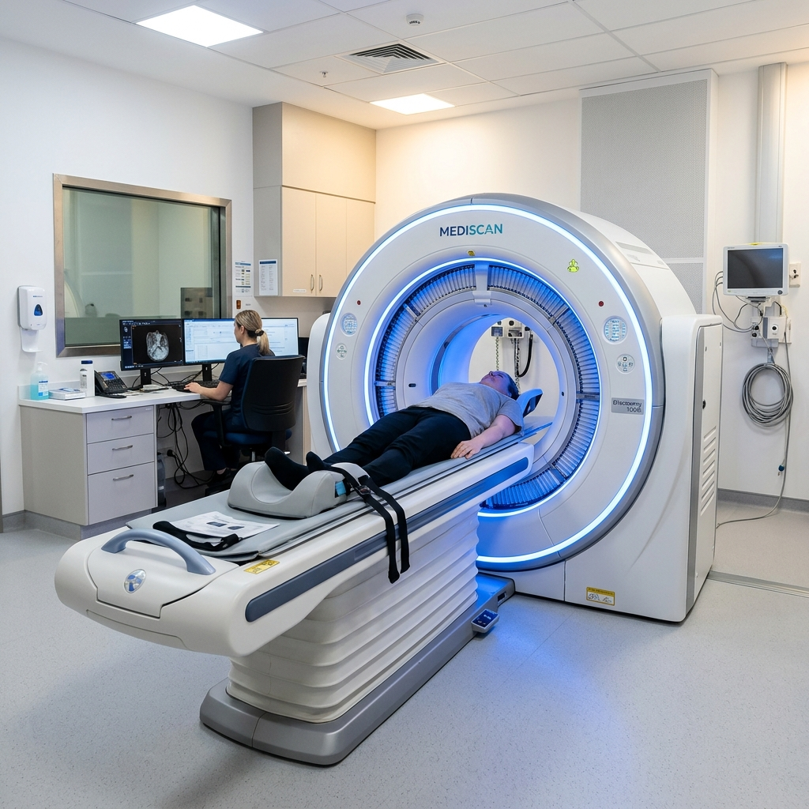

Dr. Mukhtar's
Imaging Centre | Est. 1990
Dr. Mukhtar's Imaging Centre proudly introduces J&K's first Digital PET-CT scanner. Unlike legacy analog scanners, which rely on vacuum-tube photomultipliers, our uMI550 utilizes **Digital Silicon Photomultiplier (SiPM) detectors**.
This advanced chip-based detection system increases diagnostic sensitivity. By collecting data in 80-slice CT scans, it captures highly detailed diagnostic signals. This enables early identifying of cancer nodules down to sub-1.5 mm voxel scales.
50% Lower Radiation: Higher detection sensitivity means patients require only half the radio-tracer dose compared to analog scans.
5-6 Minute Scan: Faster scans lower claustrophobia and reduce motion-blur.

Different radiopharmaceuticals target specific cellular receptors, helping in high-precision oncology staging.
Fluorodeoxyglucose (FDG) is the most common diagnostic tracer. Since active cancer cells consume glucose rapidly, FDG highlights metabolic hotspots, aiding in staging and post-chemotherapy assessment.
Prostate-Specific Membrane Antigen (PSMA) mapping is a highly specialized scan for prostate cancer. It is highly sensitive, detecting microscopic recurrences even at low, rising PSA levels.
DOTANOC imaging binds specifically to somatostatin receptors on neuroendocrine cells. It is the gold standard for identifying, staging, and monitoring neuroendocrine tumors (NETs).
How our Silicon PMT detector compares to classic analog photomultiplier vacuum tubes.
| Feature | Analog PET-CT | Digital PET-CT (uMI550) | Advantage |
|---|---|---|---|
| Radiation Dose | ~1 mCi / 10 kg | ~0.5 mCi / 10 kg | ≈50% Lower Dose |
| Scan Time | 15 - 20 minutes | 5 - 6 minutes | 3x Faster Scans |
| Spatial Resolution | ~5 - 6 mm | ~2 - 3 mm | Sharper Images |
| Detector Type | Photomultiplier Tube (PMT) | Digital Silicon Photomultiplier (SiPM) | Higher Sensitivity |
| Patient Comfort | Longer Scan Time | Shorter Scan Time | More Comfortable |
Adhering strictly to these rules is vital to ensure clear, readable molecular diagnostic scans.
Since PET-CT scans trace glucose analog (FDG), your blood glucose level must be within safe margins (ideally under 150-180 mg/dL) at the scan time. High blood sugar will compete with the tracer, blurring the images.
Common questions regarding the clinical safety and logistics of PET-CT imaging in J&K.
Yes, it is highly safe. The radioactive tracer (such as FDG) has a short half-life (approx. 110 minutes) and leaves the body rapidly via urination. It is not a contrast dye, so allergic reactions are extremely rare. The radiation dose is minimal, especially when using our Digital uMI550 scanner, which reduces the required tracer amount by half.
While the actual scanning in our digital uMI550 scanner takes only 5-6 minutes, the entire visit takes about 2 to 2.5 hours. Upon arrival, you will receive the tracer injection and rest quietly in an uptake room for about 60 minutes, allowing the tissues to absorb the tracer, before you lie down on the scanner table.
PET-CT is generally contraindicated during pregnancy unless the diagnostic benefits heavily outweigh radiation risks. Breastfeeding mothers can undergo the scan but must express and discard milk for 24 hours post-procedure before resuming normal nursing.